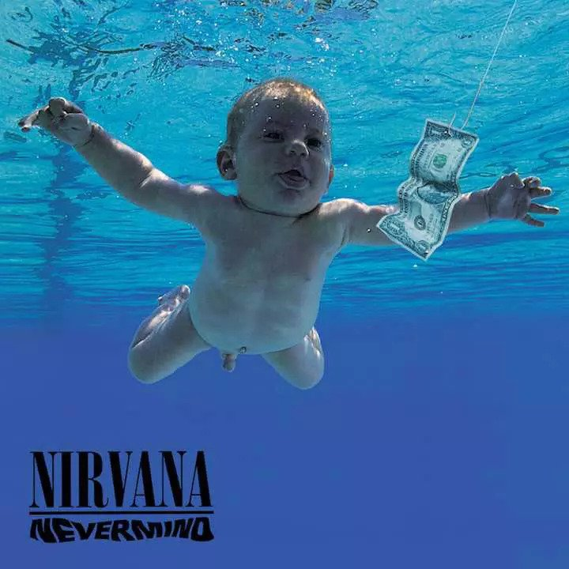

<!DOCTYPE html>
<html>
  <head>
    <title>MMBB batery</title>
    <script src="https://cdn.jsdelivr.net/npm/chart.js"></script>
    <script src="./jspsych/dist/graphFunction.js"> </script>
    <script src="https://unpkg.com/jspsych@7.1.2"></script>
    <script src="https://unpkg.com/@jspsych/plugin-html-button-response@1.1.0"></script>
    <script src="https://unpkg.com/@jspsych/plugin-audio-keyboard-response@1.1.0"></script>
    <script src="./jspsych/dist/plugin-audio-button-response.js"> </script>
    <script src="./jspsych/dist/plugin-html-button-response.js"> </script>
    <script src="./jspsych/dist/plugin-instructions.js"> </script>
    <script src="./jspsych/dist/plugin-survey-likert.js"> </script>
    <script src="./jspsych/dist/plugin-canvas-button-response.js"> </script>
    <script src="./jspsych/dist/extension-accelerometer.js"> </script>
    <script src="./jspsych/dist/plugin-html-keyboard-response.js"> </script>
    <script src="./jspsych/dist/plugin-survey-multi-choice.js"> </script>
    <script src="./jspsych/dist/plugin-initialize-microphone.js"> </script>
    <script src="./jspsych/dist/plugin-html-audio-response.js"> </script>
    <link href="./jspsych/dist/jspsych.css" rel="stylesheet" type="text/css" />
    <meta name="viewport" content="width=device-width, initial-scale=1.0, maximum-scale=1.0, user-scalable=0">

  </head>
  <body></body>
  <script>

    function change() {
          setTimeout(() => {document.body.style.backgroundColor = "#808080"}, 5);
          document.body.style.backgroundColor = '#fff';
    }

    //Calculates difference between consecutive elements of array
    function diff(A) {
      return A.slice(1).map(function(n, i) { return n - A[i]; });
    }

    function bpmEstimator(rts){
      var arr = diff(rts)
      var ioi = arr.reduce((a, b) => a + b, 0) / arr.length;
      var bpm = 60/(ioi/1000)
      return bpm
    }
     
    //first stimulus batch
    // Determining order of presentation of songs to sort.

    var song1 = new Audio();
    song1.src = './songs/beat.wav';
    var song2 = new Audio();
    song2.src = './songs/beat1.wav';
    var song3 = new Audio();
    song3.src = './songs/beat2.wav';
    var song4 = new Audio();
    song4.src = 'songs/elPesebre.mp3';
    var song5 = new Audio();
    song5.src = 'songs/elPesebre.mp3';


    function PlaySound(song) {
        if(song.paused){
            song.play();
            const color_change = 'blue';
          } else{
            song.pause()
            song.currentTime = 0;
          }
    }

    function changeColor(btn) {
            var p1 = document.getElementById("b1");
            var p2 = document.getElementById("b2");
            var p3 = document.getElementById("b3");
            var p4 = document.getElementById("b4");
            var p5 = document.getElementById("b5");
            var pb = document.getElementById("pause");
            p1.style.backgroundColor = "lightgray"
            p2.style.backgroundColor = "lightgray"
            p3.style.backgroundColor = "lightgray"
            p4.style.backgroundColor = "lightgray"
            p5.style.backgroundColor = "lightgray"
            pb.style.backgroundColor = "lightgray"

            if(btn.style.backgroundColor !== 'lightblue'){
                btn.style.backgroundColor = "lightblue";
                } else{
                btn.style.backgroundColor = "lightgray";
              }
    }

    function othersStop() {
            song1.pause()
            song2.pause()
            song3.pause()
            song4.pause()
            song5.pause()
            song1.currentTime = 0;
            song2.currentTime = 0;
            song3.currentTime = 0;
            song4.currentTime = 0;
            song5.currentTime = 0;
    }
    var prompt_songs = function(){
          return('Choose a song below<br>'
                  +"<audio></audio> <button id='b1' onclick=" + "othersStop();PlaySound(song1);changeColor(this)></button>"
                  +"<audio></audio> <button id='b2' onclick=" + "othersStop();PlaySound(song2);changeColor(this)></button>"
                  +"<audio></audio> <button id='b3' onclick=" + "othersStop();PlaySound(song3);changeColor(this)></button>"
                  +"<audio></audio> <button id='b4' onclick=" + "othersStop();PlaySound(song4);changeColor(this)></button>"
                  +"<audio></audio> <button id='b5' onclick=" + "othersStop();PlaySound(song5);changeColor(this)></button><br>"
                  +"<button id='pause' onclick=othersStop();changeColor(this)>Pause</button><br>")
                };

    var jsPsych = initJsPsych({
      extensions: [
        {type: jsPsychExtensionAccelerometer }
      ],
      on_finish: function() {
        //jsPsych.data.displayData();
        jsPsych.data.get().localSave('csv','mydata.csv');
      }
    });

    var instruction1 = {
        type: jsPsychInstructions,
        pages: [
        '<p style="font-size:6vw;">Welcome MMBB batery.</p>',
        '<p style="font-size:6vw;">Tapping task</p>',
        '<p style="font-size:6vw;">Listen to the music and to tap along with what you hear</p>',
        '<p style="font-size:6vw;">Tap on the pad using whichever hand you are most comfortable with</p>',
        '<p style="font-size:6vw;">Tap at the speed that is the most natural for you (neither too fast nor too slow)</p>',
        '<p style="font-size:6vw;">Try to maintain the tapping speed as constant as possible until the task ends.</p>',
        '<p style="font-size:6vw;">Click next when you are ready to begin</p>',
        ],
        button_label_next: "Next",
        button_label_previous: "Previous",
        show_clickable_nav: true,
    }

    var chooseSongs = {
      type: jsPsychHtmlButtonResponse,
      stimulus: prompt_songs(),
      choices: ["Next"],
      on_finish: function(){
                song1.pause()
                song2.pause()
                song3.pause()
                song4.pause()
                song5.pause()
      },
    };

    var trialTapping = {
        type: jsPsychAudioButtonResponse,
        stimulus: './songs/elPesebre.mp3',
        choices: ['Tap here'],
        trial_duration: 50000,
        response_ends_trial: false,
        on_start: function(trial) {
              document.addEventListener("mousedown", change);
        },
        on_finish: function(trial) {
              document.removeEventListener("mousedown", change);
        }
    }

    function drawTap(c){
        var ctx = c;
        var lasttimelinedata = jsPsych.data.getLastTimelineData();
        var t = lasttimelinedata.trials[1].rt;
        var yAxis = [Array(t.length).fill().map(function(){return(1)})]
        alert("Your BPM was approximatelly: " + bpmEstimator(t))
        graphCustom(t, yAxis, ['tap-timing'], ctx, 'scatter')
    }

    var displayTapping = {
        type: jsPsychCanvasButtonResponse,
        canvas_size: [300, 300],
        stimulus: drawTap,
        choices: ['Next'],
    }

    jsPsych.run([instruction1, chooseSongs, trialTapping, displayTapping]);

 </script>
</html>
